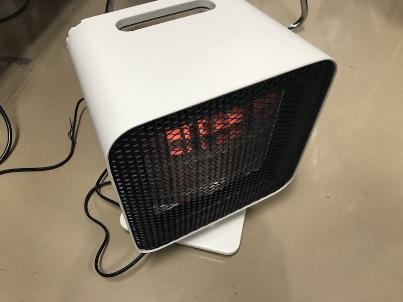
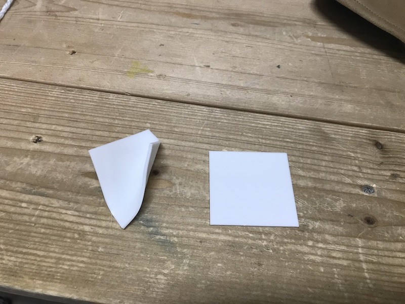
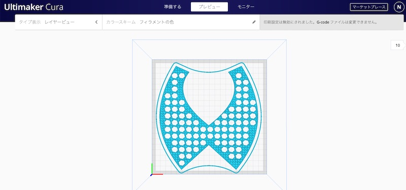
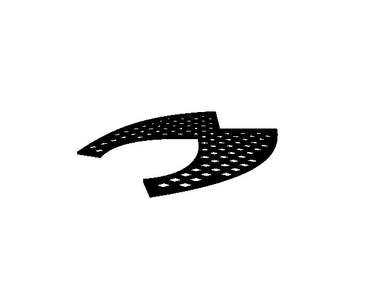
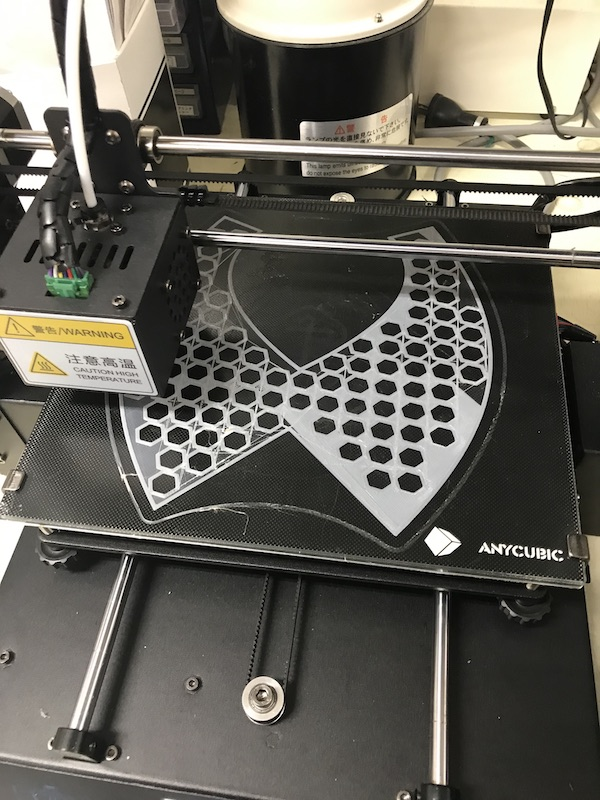
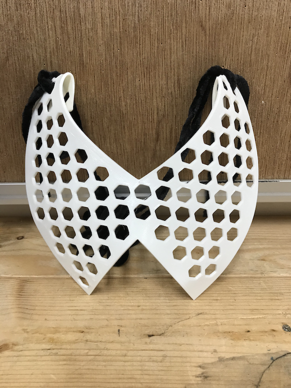
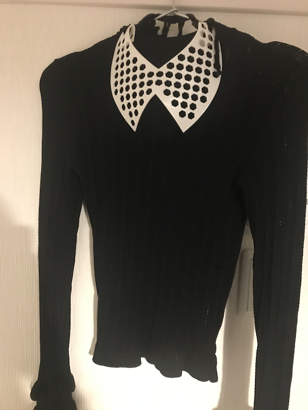

デジタルファブリケーションを使った服作りに変更。
↓
3Dプリンターを使って服の一部分をデザイン・製作してみる
↓
感温フィラメントを使って、付け襟を製作する
・完成したフィラメントに熱を与えると自由にフィラメントを曲げることが出来る。


・デザインイメージ
https://www.charkha-okaimono.net/?pid=135402698
・実際のデザイン


・製作

・つける時に首に引っかかるため改良

